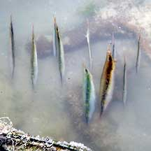
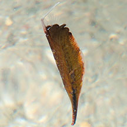
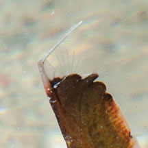
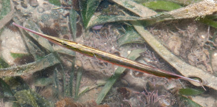
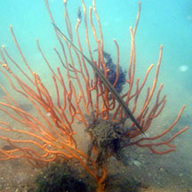
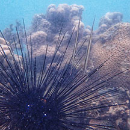
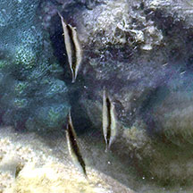
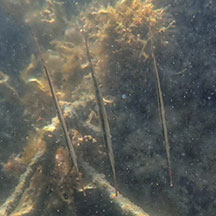

|
|
| fishes text index | photo index |
| Phylum Chordata > Subphylum Vertebrate > fishes |
| Razorfishes Family Centriscidae updated Sep 2020 Where seen? This strange vertical fishes are sometimes seen on some of our Southern shores at low tide, in deep pools such as in swimming lagoons, among coral rubble or in seagrass meadows. They are also encountered by divers in deeper waters. Elsewhere, they may be found in muddy bottoms near mangroves to inshore reefs. They often swim head down, presenting a narrow vertical profile that is unfish-like. What are razorfishes? Razorfishes belong to Family Centriscidae. According to FishBase: there are 5 genera and 15 species, and these are found in the Indo-Pacific. They are sometimes also called Shrimpfishes, probably because at first glance they look more like shrimps than fishes. Features: Those seen 6-10cm, up to 15cm long. Body long pointed on both ends, flattened knife-like with narrow pointed snout and small toothless mouth. Upper side covered in transparent thin plate-like armour that are extensions of the vertebrate. The first dorsal spine is long and sharp and located at the end of the body. There are two short spines next to it. In Aoeliscus the dorsal spine is hinged, and thus moveable. When the spine is bent, it looks like the fish broke its tail. While in those of the genus Centriscus, the dorsal spine is fixed and rigid. Razorfishes have fins, but these are tiny and transparent, the dorsal and tail fins under the spine. Sometimes mistaken for other fishes that resemble sticks and twigs. Here's more on how to tell apart stick-like fishes commonly seen on our shores. |
 In a group, head down. Pulau Hantu, Feb 06 |
 Tanah Merah, Jun 12 |
 Hinged dorsal spine. Tiny, transparent fin. |
| Camou Colours: Their colours may change depending on their surroundings. Some are greenish-yellow with diffused stripe among seagrasses. Pale with a black stripe on open sand or rubble. Colours seen on our shores
include blackish, brown, yellowish and pale silvery. Not fishy! They don't look or behave like a typical fish, and thus often overlooked. They usually swim head down in small synchronised groups, often among the spines of large sea urchins such as the Long-spined sea urchin or over sea fans, branching hard corals and sea whips. But they do swim horizontally and can make a swift getaway. |
 Cyrene, May 08 |
||
 One, next to a sea fan. Tuas, Jun 15 |
 Seen among spines of Diadema urchin. Pulau Semakau North, Apr 25 Photo shared by Richard Kuah on facebook. |
|
| What do they eat? Razorfishes eat tiny planktonic crustaceans and zoo plankton, sucking these up with
the small toothless mouth. The mouth is at the tip of a long, tube-like
snout. Human uses: These bizarre fishes are sometimes taken for the live aquarium trade. Some species are harvested and ground up into fishmeal. |
| Razorfishes on Singapore shores |
On wildsingapore
flickr
|
| Other sightings on Singapore shores |
 Beting Bemban Besar, Oct 25 Photo shared by Lon Voon Ong on facebook. |
 Terumbu Bemban, Aug 23 Photo shared by Richard Kuah on facebook. |
| Family
Centriscidae recorded for Singapore from Wee Y.C. and Peter K. L. Ng. 1994. A First Look at Biodiversity in Singapore.
|
Links
References
|